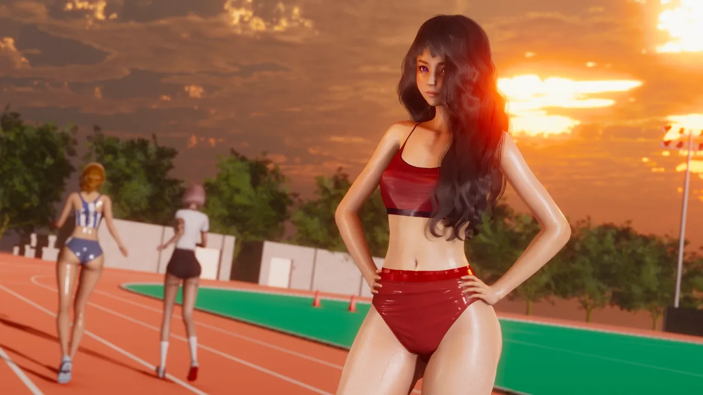
Maria
Age 19 · 170 cm · 55 kg · Favourite film: La La Land
An up-and-coming model with a bright smile and a love of running she inherited from her parents. Cheerful and driven, she pulls everyone around her along.
A visual novel by KloppStyle
Small town. Big city. No way back.
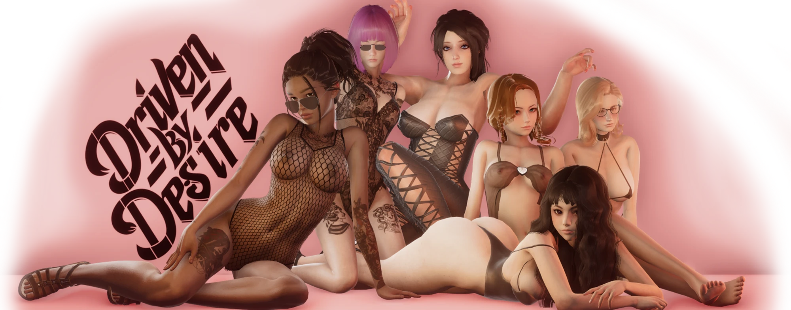
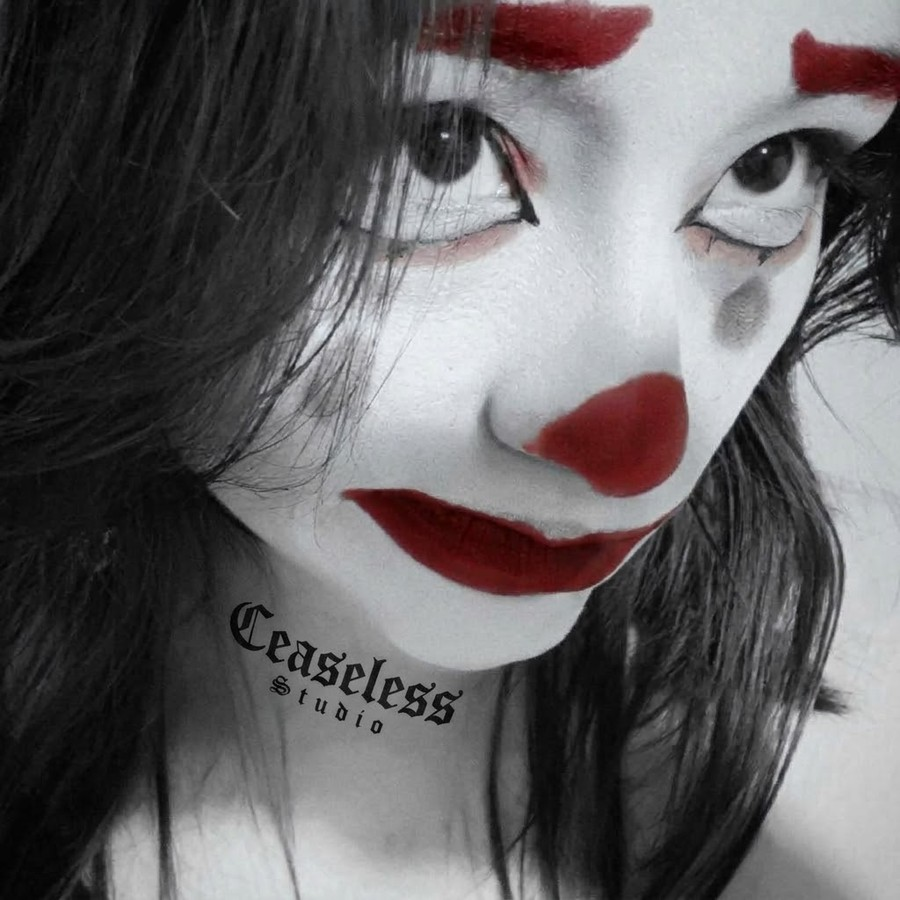
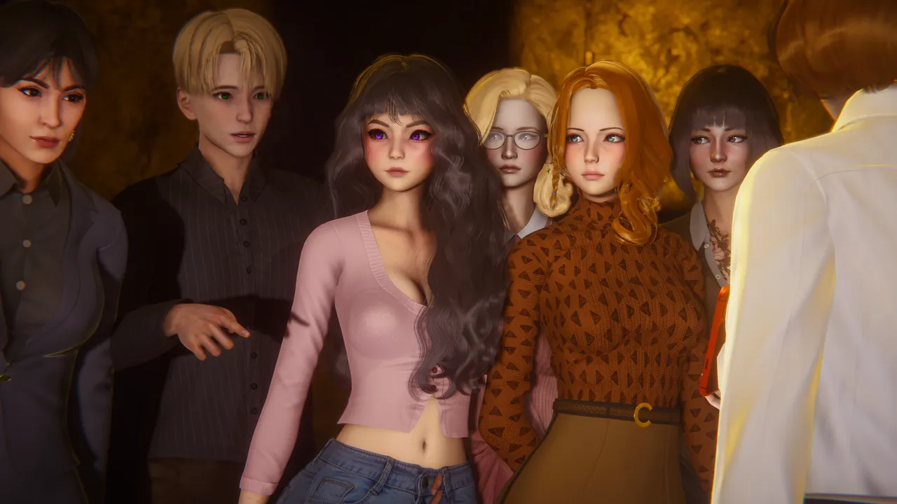
The threshold
Beyond this door: Galit, glass towers, a modeling agency, and a story that starts the moment you step off the train.
Ceaseless Studio is not the author of Driven By Desire - that is KloppStyle. We keep the backstage: the Discord server, the roles, the reports. The studio stays backstage. The novel takes the stage.
You're just a simple village guy. Farm work, chores, evenings with friends - nothing special. But deep down, something was always missing. So one day you leave it all behind.
A new world opens up: the city of Galit, a modeling agency, six women with lives of their own, and situations you've never faced before. You'll build relationships, make choices, and find out what you're willing to risk. Some choices are easy. Others are not.
And once you move forward, there's no going back.
Six main girls. Each with her own life, her own reasons, and her own way of turning your new life upside down.

Age 19 · 170 cm · 55 kg · Favourite film: La La Land
An up-and-coming model with a bright smile and a love of running she inherited from her parents. Cheerful and driven, she pulls everyone around her along.
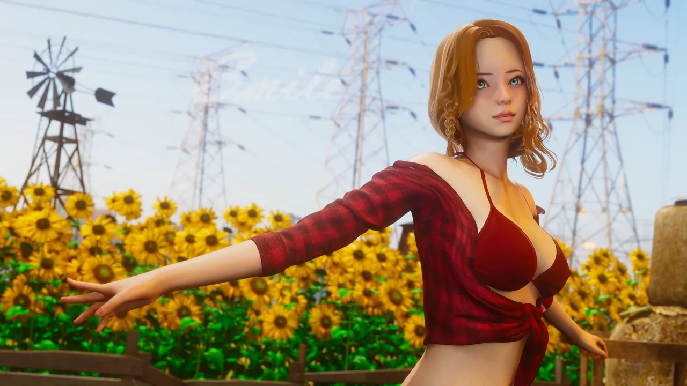
Age 23 · 171 cm · 52 kg · Favourite film: Twilight
A childhood friend with a lively, sunny personality. After years apart, working together finally gives you time to close the distance again.
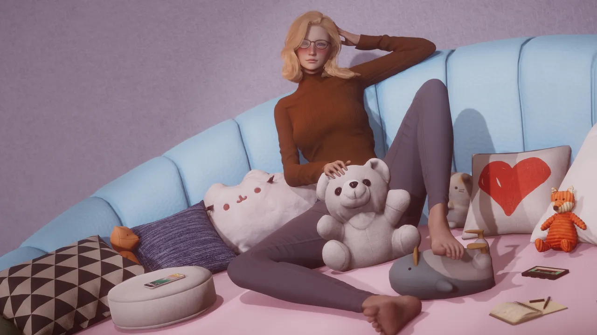
Age 18 · 168 cm · 48 kg · Favourite film: Titanic
The kindest person you've met. You stepped in when a man harassed her at a fashion show, and she has been a warm presence ever since. She gets along with everyone, but her bond with Lucy is something else.
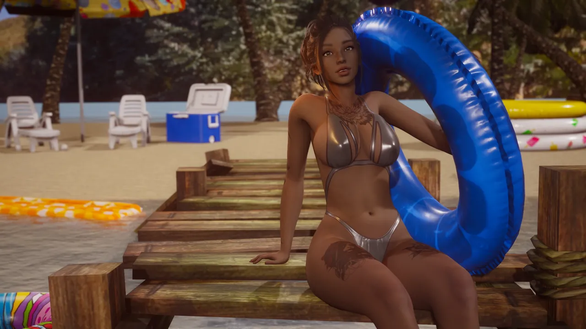
Age 28 · 175 cm · 60 kg · Favourite film: Point Break
A tall, striking model, daughter of a French mother and a Caribbean father. A veteran of the industry, she mentors younger girls and carries herself like she owns the room.
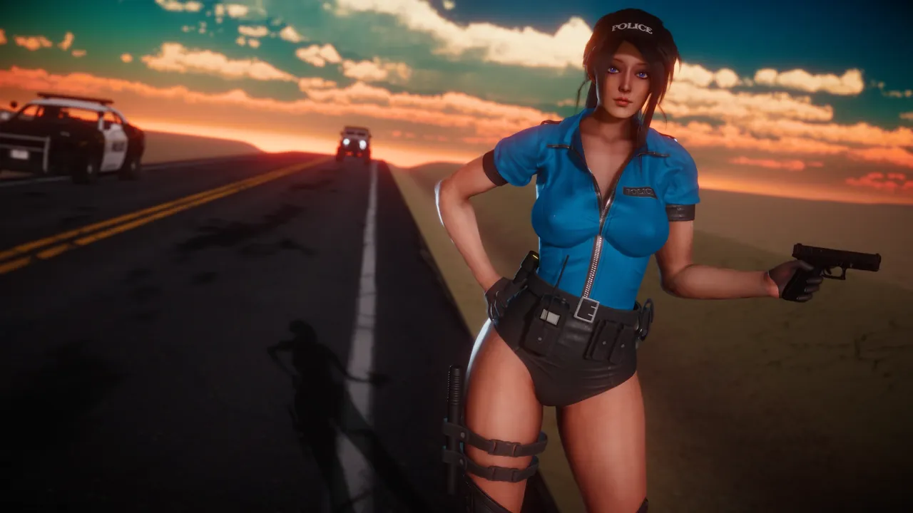
Age 29 · 182 cm · 75 kg · Favourite film: Lock, Stock and Two Smoking Barrels
Tall, strong and built like an athlete, she shares the runway with the models. What her main job actually is remains a mystery. Confidence and charisma in equal measure.
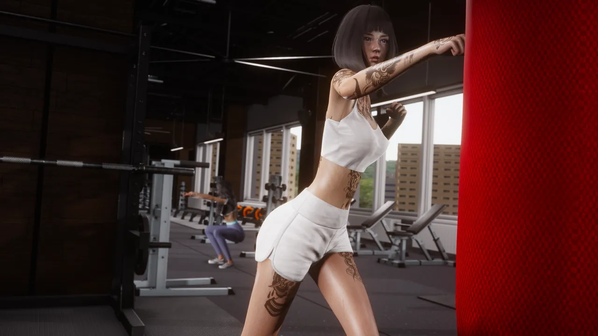
Age 19 · 169 cm · 44 kg · Favourite film: The Fifth Element
Tattooed, tough and independent, with a soft spot for the people she loves. Fiercely protective of Elsa, and still a lot left to learn about her.
A few frames from the game - no spoilers.
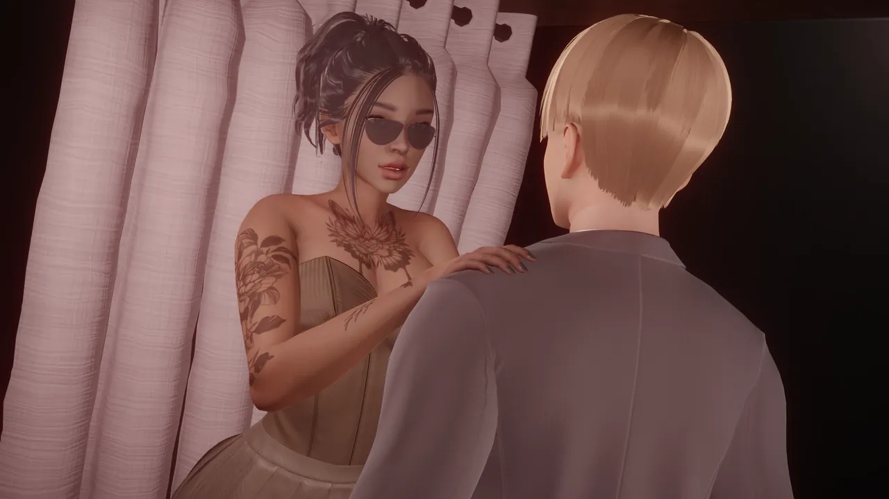
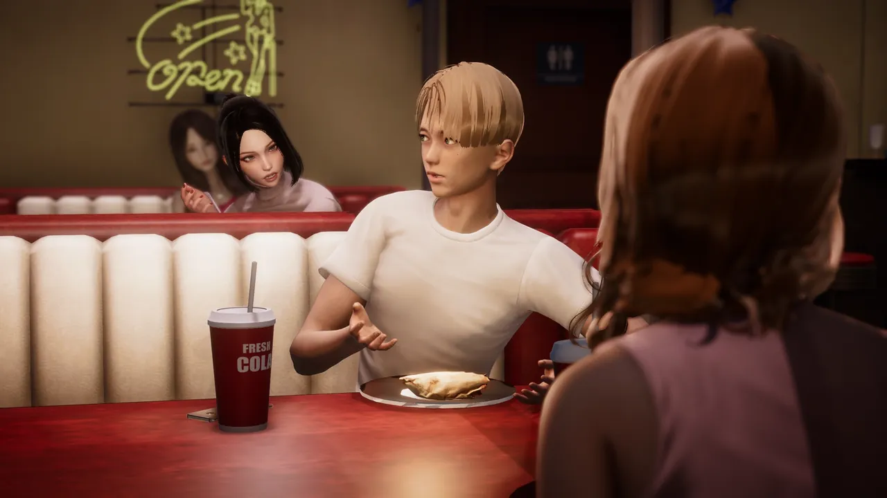
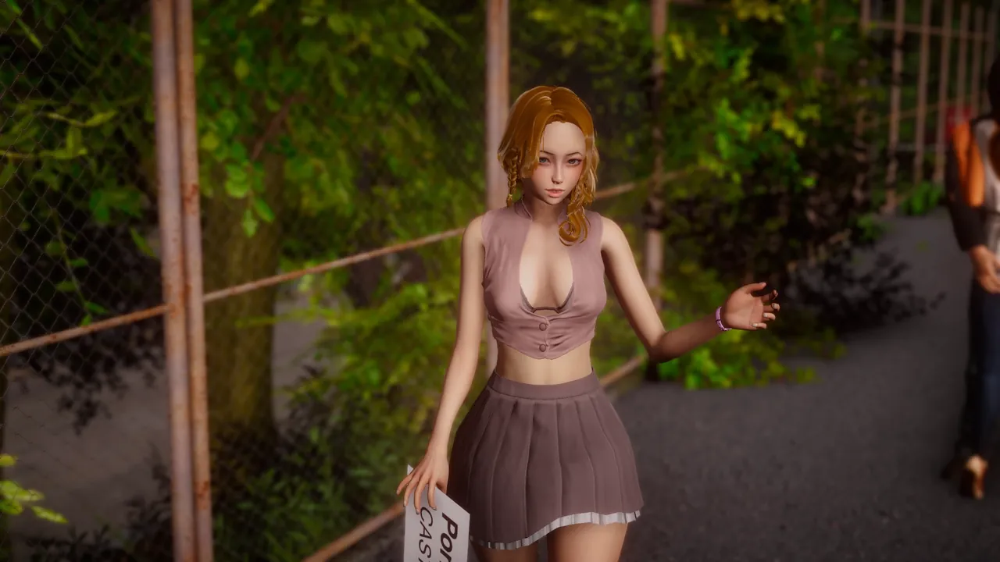
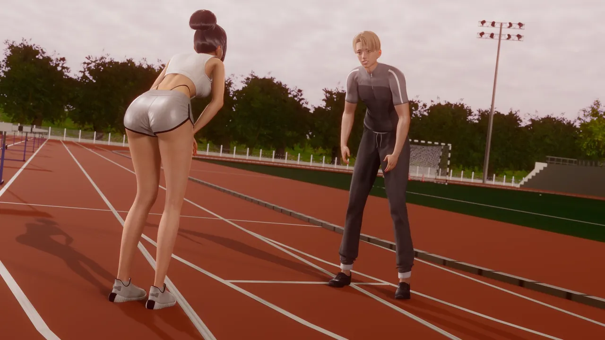
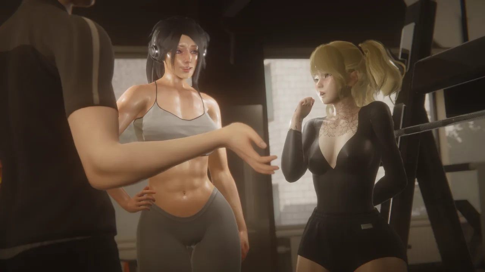
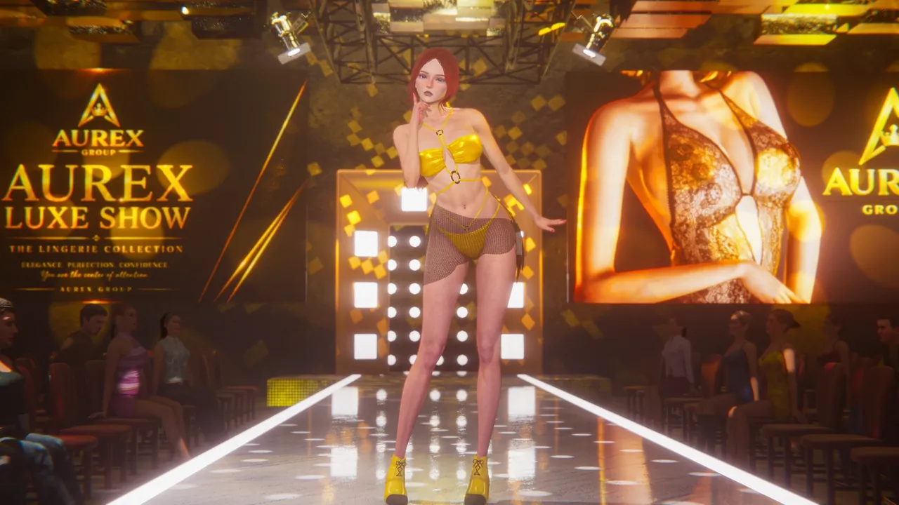
Short loops from later chapters, including adult scenes. Mild spoilers ahead.
Scenes from the adult version of the game. 18+.
The latest public build is 0.5.75. The novel is still in development, and new chapters arrive as the story grows. Platforms: Windows, macOS and Android.
All the links - Patreon, itch.io, Discord, SubscribeStar, Boosty and YouTube - sit at the top of this page.
Driven By Desire is an adult visual novel. 18+ only.